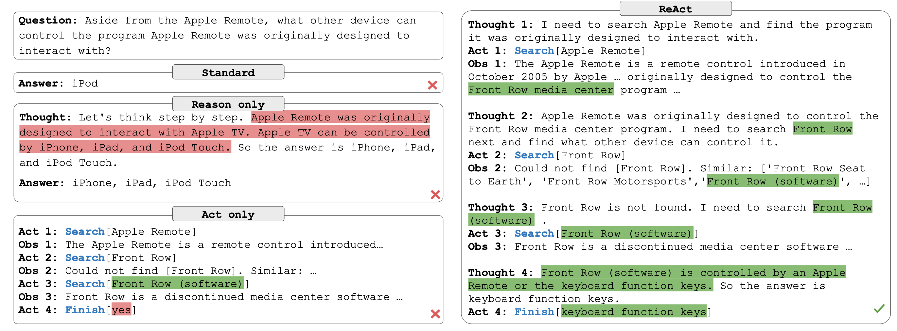
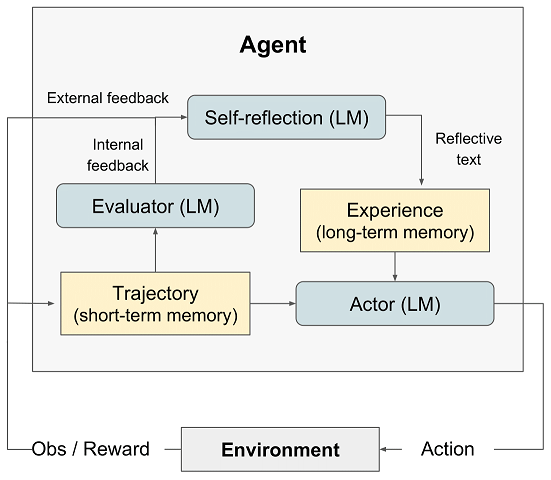
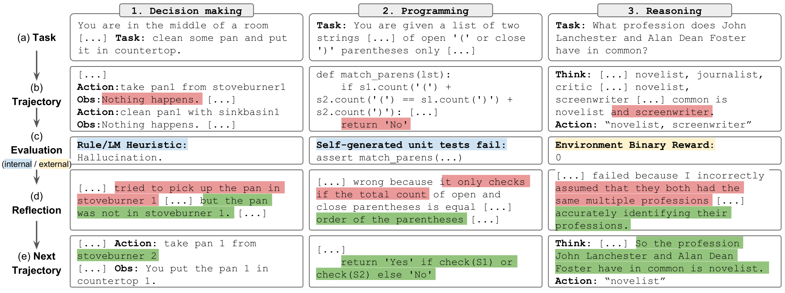
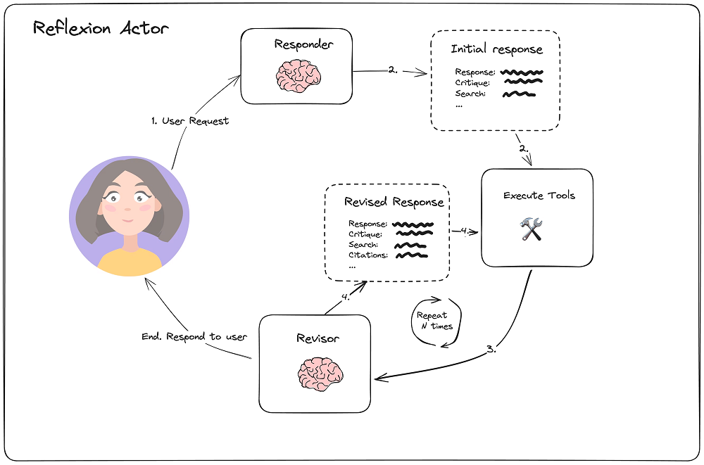

ReAct #
论文 #
-
论文地址
ReAct: Synergizing Reasoning and Acting in Language Models -
开源地址
ReAct git -
Project page
ReAct: Synergizing Reasoning and Acting in Language Models
实现[1] #

import json
import sys
folder = './prompts/'
prompt_file = 'prompts_naive.json'
with open(folder + prompt_file, 'r') as f:
prompt_dict = json.load(f)
webthink_examples = prompt_dict['webthink_simple6']
instruction = """Solve a question answering task with interleaving Thought, Action, Observation steps. Thought can reason about the current situation, and Action can be three types:
(1) Search[entity], which searches the exact entity on Wikipedia and returns the first paragraph if it exists. If not, it will return some similar entities to search.
(2) Lookup[keyword], which returns the next sentence containing keyword in the current passage.
(3) Finish[answer], which returns the answer and finishes the task.
Here are some examples.
"""
webthink_prompt = instruction + webthink_examples
Reflexion #
论文 #

如图所示，Reflexion框架包含四个组成部分：
- Actor: Actor由LLM担任，主要工作是基于当前环境生成下一步的动作。
- Evaluator: Evlauator主要工作是衡量Actor生成结果的质量。就像强化学习中的Reward函数对Actor的执行结果进行打分。
- Self-reflexion：Self-reflexion一般由LLM担任，是Reflexion框架中最重要的部分。它能结合离散的reward信号(如success/fail)、trajectory等生成具体且详细语言反馈信号，这种反馈信号会储存在Memory中，启发下一次实验的Actor执行动作。相比reward分数，这种语言反馈信号储存更丰富的信息，例如在代码生成任务中，Reward只会告诉你任务是失败还是成功，但是Self-reflexion会告诉你哪一步错了，错误的原因是什么等。
- Memory：分为短期记忆(short-term)和长期记忆(long-term)。在一次实验中的上下文称为短期记忆，多次试验中Self-reflexion的结果称为长期记忆。类比人类思考过程，在推理阶段Actor会不仅会利用短期记忆，还会结合长期记忆中存储的重要细节，这是Reflexion框架能取得效果的关键。

实现[10] #

- Initial responder
import datetime
actor_prompt_template = ChatPromptTemplate.from_messages(
[
(
"system",
"""You are expert researcher.
Current time: {time}
1. {first_instruction}
2. Reflect and critique your answer. Be severe to maximize improvement.
3. Recommend search queries to research information and improve your answer.""",
),
MessagesPlaceholder(variable_name="messages"),
(
"user",
"\n\n<system>Reflect on the user's original question and the"
" actions taken thus far. Respond using the {function_name} function.</reminder>",
),
]
).partial(
time=lambda: datetime.datetime.now().isoformat(),
)
initial_answer_chain = actor_prompt_template.partial(
first_instruction="Provide a detailed ~250 word answer.",
function_name=AnswerQuestion.__name__,
) | llm.bind_tools(tools=[AnswerQuestion])
validator = PydanticToolsParser(tools=[AnswerQuestion])
first_responder = ResponderWithRetries(
runnable=initial_answer_chain, validator=validator
)
- Revision
revise_instructions = """Revise your previous answer using the new information.
- You should use the previous critique to add important information to your answer.
- You MUST include numerical citations in your revised answer to ensure it can be verified.
- Add a "References" section to the bottom of your answer (which does not count towards the word limit). In form of:
- [1] https://example.com
- [2] https://example.com
- You should use the previous critique to remove superfluous information from your answer and make SURE it is not more than 250 words.
"""
# Extend the initial answer schema to include references.
# Forcing citation in the model encourages grounded responses
class ReviseAnswer(AnswerQuestion):
"""Revise your original answer to your question. Provide an answer, reflection,
cite your reflection with references, and finally
add search queries to improve the answer."""
references: list[str] = Field(
description="Citations motivating your updated answer."
)
revision_chain = actor_prompt_template.partial(
first_instruction=revise_instructions,
function_name=ReviseAnswer.__name__,
) | llm.bind_tools(tools=[ReviseAnswer])
revision_validator = PydanticToolsParser(tools=[ReviseAnswer])
revisor = ResponderWithRetries(runnable=revision_chain, validator=revision_validator)
总结 #
【ReAct 和 Reflexion 实现主要靠 prompt 工程】
参考 #
ReAct #
Reflexion #
1xx. Reflection Agents
LangGraph：Reflection Agents 实战 V
xxx #
Agent四大范式 | CRITIC：吴恩达力推Agent设计范式
Practice #
Translation Agent: Agentic translation using reflection workflow